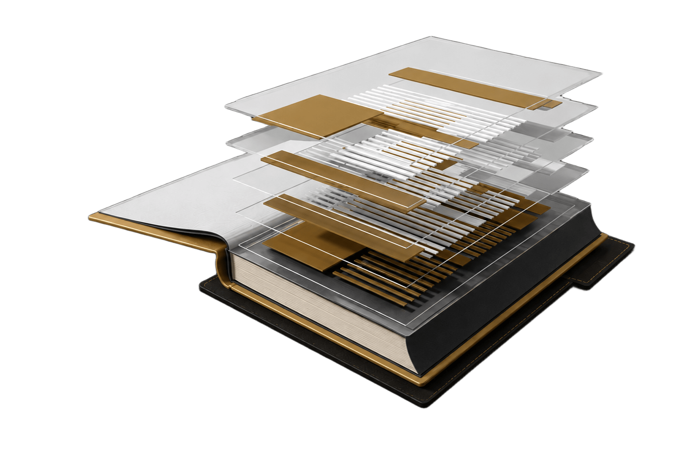

🏛 Nuevo espacio
Un espacio dedicado a la documentación, análisis y difusión de proyectos arquitectónicos con valor histórico, cultural y patrimonial: modelos 3D navegables de obras de referencia y una selección curada de plataformas y normativa oficial sobre Bienes de Interés Cultural (BIC) en Colombia.

Visor 3D Interactivo
Reconstrucciones volumétricas realizadas en SketchUp y exportadas a Three.js, con recorrido interactivo y ficha técnica de cada proyecto.
Modelo 3D navegable de la residencia Weiss. Reconstrucción volumétrica de una obra temprana de Louis I. Kahn, con recorrido interactivo y ficha técnica.
Modelo 3D navegable de la Casa Sotará. Recorrido interactivo y ficha técnica del proyecto.
Modelo 3D navegable de Fallingwater (Casa de la Cascada), en Bear Run, Pensilvania. 1491 Mill Run Rd, Mill Run, PA 15464, Estados Unidos. Recorrido interactivo y ficha técnica del proyecto.
Próximamente: nuevos modelos 3D de proyectos con valor patrimonial. Escríbeme si quieres proponer una obra para documentar.
Bienes de Interés Cultural
Plataformas, normativa y archivos digitales de referencia para la investigación y valoración de bienes patrimoniales en Colombia.
Archivos y bibliotecas digitales
Catálogo y consulta de fondos documentales históricos.
biblioteca.archivogeneral.gov.coColección internacional de documentos y materiales patrimoniales digitalizados.
loc.gov/collections/world-digital-libraryNormativa y documentos técnicos (PDF)
Documento técnico sobre sostenibilidad aplicada al patrimonio cultural.
idpc.gov.co · PDFListado oficial actualizado — Ministerio de Cultura (octubre 2025).
mincultura.gov.co · PDFMetodología oficial — Secretaría Distrital de Planeación (SDP).
sdp.gov.co · PDFPlataformas, visores y datos abiertos
Consulta oficial de Bienes de Interés Cultural — IDPC.
sisbic.idpc.gov.coConjunto de datos abiertos del Distrito.
datosabiertos.bogota.gov.coSección oficial de patrimonio y renovación urbana.
sdp.gov.coSistema de Información del Norma Urbanística de Bogotá.
sinu.sdp.gov.co/visorConsulta predial en visualización tridimensional.
sinu.sdp.gov.co:2443/#/3d/predialContacto
Escríbeme si quieres documentar un proyecto de valor histórico o cultural con visor 3D interactivo.
📍 Chía, Cundinamarca, Colombia · Disponible globalmente de forma remota